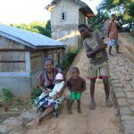
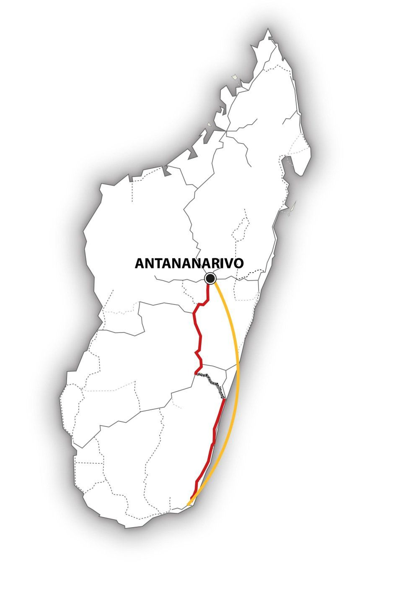

Le Sud-Est de Madagascar hors des sentiers battus – MG115
Au cours de ce périple intensif et complet, nous apprenons à mieux connaître le Sud-Est de Madagascar.
Après l’idyllique ville côtière malgache de Fort-Dauphin, nous partons à la découverte d’étendues côtières pittoresques… Les contreforts de la chaîne de montagnes de l’Est, suivis des marécages puis des embruns de l’Océan Indien. Sans oublier les nombreux villages de pêcheurs, les forêts d’épineux et des réserves naturelles peu fréquentées…
Et bien sûr : le voyage en train à travers la forêt tropicale – dans une ambiance inoubliable !
Une expérience unique à Madagascar, hors des sentiers battus, et où vous ne rencontrerez que de rares touristes ! Place à la rencontre avec les populations locales !

-

MG115 : Le Sud-Est de Madagascar hors des sentiers battus
L’essentiel : 
• Petites villes de la Côte Est
• Voyage en train à travers la forêt tropicale
• Nature dans différentes réserves naturelles.
Période :
Ce circuit est réalisable d’août à décembre.
Itinéraire :
Antananarivo – Fort-Dauphin – Berenty – Nahampoana – Fort-Dauphin – Manantenina – Vangaindrano – Manakara – Sahambavy – Antananarivo
Caractéristiques du circuit :
Région : Sud, Sud-Est et Hauts-Plateaux
Contenu : nature et culture
Condition physique . moyenne
Tous les détails de ce voyage au format PDF
Jour 1 : Vol depuis la Suisse
Madagascar nous souhaite la bienvenue ! Nous atterrissons tard le soir à l’aéroport d’Antananarivo et le chauffeur nous emmène directement à notre hôtel.
Jour 2 : Antananarivo – Fort-Dauphin
Nous nous envolons pour la ville côtière de Fort-Dauphin, à l’extrême Sud-Est de Madagascar. Elle est située sur une presqu’île, bordée par l’Océan Indien sur trois côtés. De magnifiques bords de mer nous attendent et de larges baies nous incitent à la baignade.
Jour 3 : Berenty
A environ 90 km à l’ouest de Fort-Dauphin, nous découvrons la Réserve de Berenty, une forêt sèche épineuse qui s’étale sur les berges du fleuve, avec de nombreuses espèces d’animaux et de plantes – souvent endémiques – de Madagascar. Chaque pas nous amène son lot de surprises !
Jour 4 : Berenty – Fort-Dauphin
Le matin, nous nous émerveillons à nouveau sur les 250ha de ce superbe domaine de Berenty. Sur le chemin du retour vers Fort-Dauphin, nous traversons des paysages de plus en plus verts et fertiles au fur et à mesure que nous nous approchons de la côte. C’est le royaume des litchis, ananas et melons. A proximité des villages Antanosy, nous pouvons admirer les sculptures funéraires en bois ou les groupes d’obélisques, érigés à la mémoire des défunts.
Jours 5 : Fort-Dauphin – Réserve de Nahampoana
Nous visitons la réserve privée de Nahampoana, à environ sept kilomètres de Fort-Dauphin. Cette réserve accueille caméléons, tortues et beaucoup de lémuriens diurnes. Et voici les mignons Lémur Catta, à la queue rayée noire et blanche ! Ils sont si curieux que nous pouvons les approcher de très près ! Mais n’oublions pas la superbe végétation : cactus, aloès, euphorbes, figuiers de barbarie, plantes carnivores, mais aussi les « oreilles d’éléphants » avec leurs feuilles géantes, si finement nervurées…
Jour 6 : Réserve de Nahampoana – Fort-Dauphin
Après une autre randonnée dans la Réserve de Nahampoana, nous retournons à Fort-Dauphin. La ville est surplombée par le mont Saint-Louis, qui culmine à 529m. Profitons de marcher le long des plages de sable, dans les baies, sans oublier un arrêt dans l’un des sympathiques restaurants ! Adoptons le rythme du Sud-Est et admirons les vieilles maisons coloniales…
Jour 7 : Fort-Dauphin – Ste Luce – Manantenina
Franchissons les montagnes, puis suivons les pistes en terre qui nous amènent au petit village de pêcheurs de Ste Luce. Dans cette baie de rêve, nous observons le travail des pêcheurs. Dans l’après-midi, nous poursuivons la route en direction de Manantenina. En chemin, nous traversons une rivière sur un ferry typiquement malgache et …
Jour 8 : Manantenina – Vangaindrano
Nous voici dans une région complètement isolée… Nous voyageons tranquillement à travers de petits villages, profitons du spectacle de cette mer sauvage et découvrons une végétation qui oscille entre verdure et sécheresse… Nous traversons une bande côtière, de quelques kilomètres de large, caractérisée par ses dunes et riche en Sarracénies, ces plantes carnivores. Prenons le temps d’admirer les superbes arbres du voyageur, ainsi que la savane et ses herbes balayées par le vent… Aujourd’hui, nous embarquons à nouveau sur un bac pour franchir un fleuve !
Jour 9 : Vangaindrano – Farafangana – Manakara
Depuis le petit village de Vangaindrano, l’étape de la journée se poursuit à travers le no man’s land calme et beau tout au long de cette superbe Côte Est jusqu’à la petite ville de Farafangana, puis jusqu’à Manakara. La construction de la ligne de chemin de fer (en 1936) a fait de la ville un centre de commerce et de transbordement majeur, dotée d’un important port. Mais de nos jours, le calme est revenu…
Jour 10 : Manakara
Journée de détente à Manakara ! Profitons d’une promenade en pirogue sur l’eau douce du Canal des Pangalanes, à la découverte d’un paysage fertile de rizières, de hameaux et de villageois qui nous saluent au passage.
Jour 11 : Manakara
Reposons-nous une autre journée à Manakara, pour profiter de cet environnement charmant et apprécier une marche à travers le paysage vallonné et tropical de la campagne environnante.
Jour 12 : Trajet en train Manakara – Sahambavy
Tôt le matin, nous partons pour la gare, où nous prenons « l’Express de la jungle », à destination des hauts-plateaux. La voie serpente à travers la forêt tropicale, d’un vert intense, et traverse de nombreux ponts et tunnels. Le voyage est lent : nous avons beaucoup de temps pour nous émerveiller et prendre des photos. Sans oublier de partager l’animation créée par les passagers !
A Sahambavy, nous retrouvons notre chauffeur.
Jour 13 : Sahambavy – Antsirabe
De Sahambavy et ses plantations de thé d’un vert tendre, nous prenons la route pour Antsirabe. Le paysage devient plus stérile. Terre rouge et rizières caractérisent le panorama, et les maisons traditionnelles des hauts-plateaux, en latérite rouge, à deux étages, bordent la route sinueuse. A Ambositra, nous admirons l’art des sculpteurs sur bois. En début de soirée, nous atteignons la charmante station thermale d’Antsirabe.
Jour 14 : Antsirabe – Antananarivo
Notre dernier jour de voyage est arrivé… Les yeux et le cœur remplis d’innombrables impressions et expériences, nous partons à destination de la capitale, Antananarivo.
Jour 15 : Vol de retour